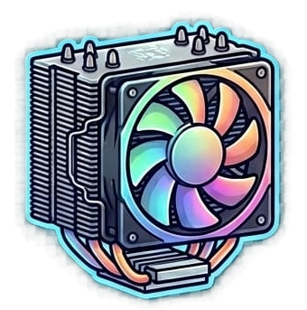
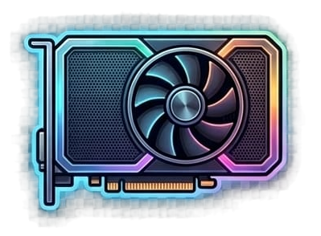
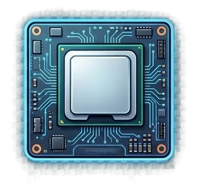
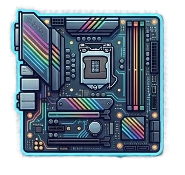
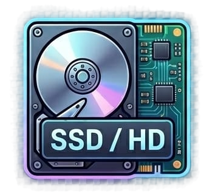
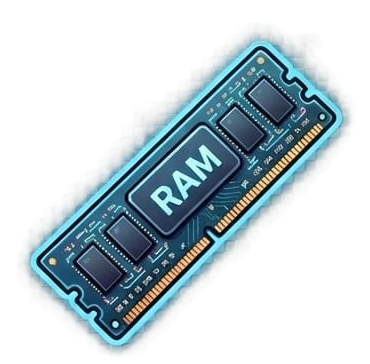

Refrigeração
Equilíbrio entre pressão positiva e exaustão térmica para um PC frio, silencioso e livre de poeira.

Equilíbrio entre pressão positiva e exaustão térmica para um PC frio, silencioso e livre de poeira.

A Placa de Vídeo é o motor gráfico do PC

O cérebro do PC Gamer

Conecta todos os componentes

Onde os dados são guardados

Memória de trabalho do sistema